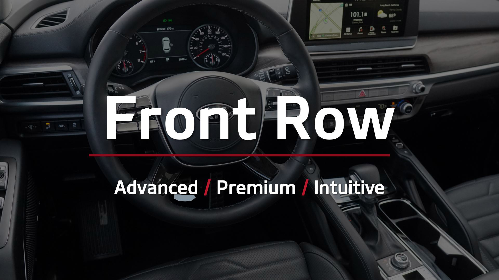
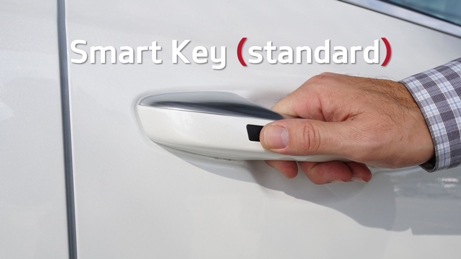
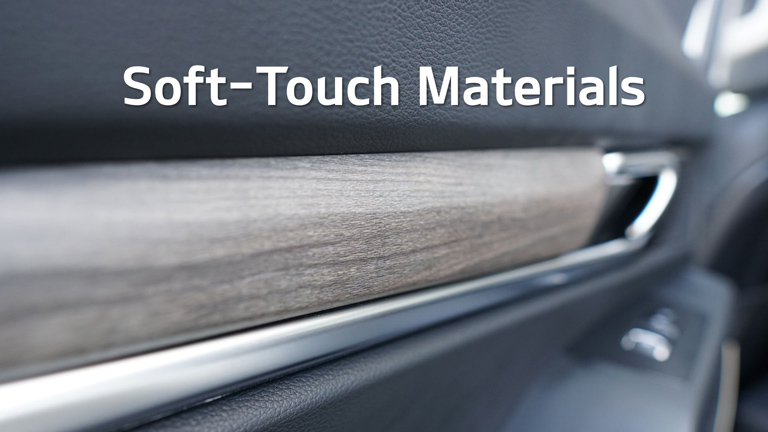
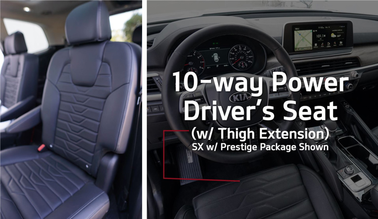
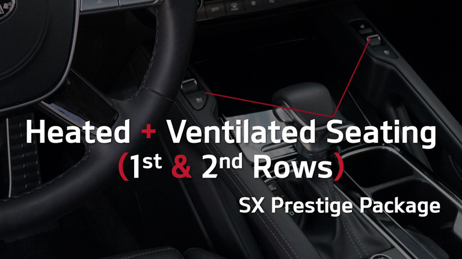
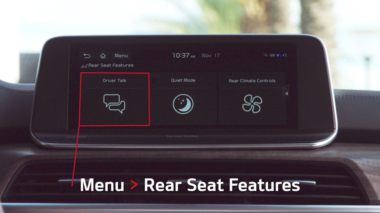

<section [@fade]="true">
    

    <div class="container">
      <p>True to its Challenger roots, the Kia design team set its sights a class above the mainstream midsize SUV competition, benchmarking the Premium SUV Segment for levels of quality, design, and technology. The result? An advanced, premium, and innovative interior intended to redefine expectations for the segment.</p>

      <p>Take this guided comparison tour of the first row and form your own opinion!</p>

      <h4>Workmanship</h4>

      

      <p>Kia strives to deliver premium levels of quality to the mass market segment. Get to know the Telluride, then repeat these exercises for the featured competitor to discover the difference...</p>

      <div class="container py-5" *ngIf="!dataReady && !error.length">
        <mat-spinner class="mx-auto my-5"></mat-spinner>
      </div>

      <mat-accordion *ngIf="dataReady && !error.length">
        <mat-expansion-panel id="panel01" (opened)="scroll('panel01')">
          <mat-expansion-panel-header [collapsedHeight]="'auto'" [expandedHeight]="'auto'">
            Smart Key / Push Button Start (standard)
          </mat-expansion-panel-header>
  
          <ng-template matExpansionPanelContent>
            

            <p>With Smart Key standard, every Telluride owner gets VIP treatment.</p>

            <mat-checkbox name="q0101" #q0101="ngModel" [(ngModel)]="frontRow.q0101" (ngModelChange)="setCheck(q0101)">Put the key in your pocket</mat-checkbox>

            <mat-checkbox name="q0102" #q0102="ngModel" [(ngModel)]="frontRow.q0102" (ngModelChange)="setCheck(q0102)">Depress the remote lock/unlock button on the door handle</mat-checkbox>

            <div class="form-group">
              <label for="q0103">Repeat this maneuver with the competitor &ndash; any noticeable differences?</label>
              <textarea class="form-control" id="q0103" rows="2" placeholder="Write something here..." name="q0103" #q0103="ngModel" [(ngModel)]="frontRow.q0103" (ngModelChange)="setText(q0103)"(blur)="setTextBlur(q0103)"></textarea>
            </div>
          </ng-template>
        </mat-expansion-panel>
        <mat-expansion-panel id="panel02" (opened)="scroll('panel02')">
          <mat-expansion-panel-header [collapsedHeight]="'auto'" [expandedHeight]="'auto'">
            Door Open/Close Test
          </mat-expansion-panel-header>
  
          <ng-template matExpansionPanelContent>
            

            <p>Did you know a customer’s first impression of quality often starts with the door handle? The sounds of the door opening and closing indicate the level of sound attenuative materials the manufacturer has invested in.</p>

            <mat-checkbox name="q0201" #q0201="ngModel" [(ngModel)]="frontRow.q0201" (ngModelChange)="setCheck(q0201)">Open and close the driver’s front door. Repeat with the competitor.</mat-checkbox>

            <div class="form-group">
              <label for="q0202">What is the difference in the feel of the door handle operation?</label>
              <textarea class="form-control" id="q0202" rows="2" placeholder="Write something here..." name="q0202" #q0202="ngModel" [(ngModel)]="frontRow.q0202" (ngModelChange)="setText(q0202)"(blur)="setTextBlur(q0202)"></textarea>
            </div>

            <div class="form-group">
              <label for="q0203">What is the difference in the sound when opening and closing the doors?</label>
              <textarea class="form-control" id="q0203" rows="2" placeholder="Write something here..." name="q0203" #q0203="ngModel" [(ngModel)]="frontRow.q0203" (ngModelChange)="setText(q0203)"(blur)="setTextBlur(q0203)"></textarea>
            </div>
          </ng-template>
        </mat-expansion-panel>
        <mat-expansion-panel id="panel03" (opened)="scroll('panel03')">
          <mat-expansion-panel-header [collapsedHeight]="'auto'" [expandedHeight]="'auto'">
            Insulated Glass (EX, SX &ndash; Windshield / Front-Side Windows)
          </mat-expansion-panel-header>
  
          <ng-template matExpansionPanelContent>
            

            <p>Luxury vehicles are whisper quiet, and Telluride has been built to approach that standard. All Telluride models feature insulated glass on the windshield <em>and</em> EX and SX also add insulated front-row side windows.</p>

            <mat-checkbox name="q0301" #q0301="ngModel" [(ngModel)]="frontRow.q0301" (ngModelChange)="setCheck(q0301)">With the driver’s side front window up, sit in the front seat, close the door, and have your partner talk at a normal level.</mat-checkbox>

            <div class="form-group">
              <label for="q0302">Repeat this in the competitive vehicle. Do you notice a difference in the level of sound isolation?</label>
              <textarea class="form-control" id="q0302" rows="2" placeholder="Write something here..." name="q0302" #q0302="ngModel" [(ngModel)]="frontRow.q0302" (ngModelChange)="setText(q0302)"(blur)="setTextBlur(q0302)"></textarea>
            </div>

            <div class="form-group">
              <label for="q0303">How might this be a benefit during highway driving?</label>
              <textarea class="form-control" id="q0303" rows="2" placeholder="Write something here..." name="q0303" #q0303="ngModel" [(ngModel)]="frontRow.q0303" (ngModelChange)="setText(q0303)"(blur)="setTextBlur(q0303)"></textarea>
            </div>
          </ng-template>
        </mat-expansion-panel>
        <mat-expansion-panel id="panel04" (opened)="scroll('panel04')">
          <mat-expansion-panel-header [collapsedHeight]="'auto'" [expandedHeight]="'auto'">
            Soft-Touch Door and Dash Panels
          </mat-expansion-panel-header>
  
          <ng-template matExpansionPanelContent>
            

            <p>When Kia analyzed the mid-size competition, one thing was readily apparent: midsize SUVs typically offer a “sea” of hard plastic. Not Telluride. It’s time to appreciate the difference...</p>

            <mat-checkbox name="q0401" #q0401="ngModel" [(ngModel)]="frontRow.q0401" (ngModelChange)="setCheck(q0401)">Observe the abundance of soft-touch materials within the Telluride interior.</mat-checkbox>

            <div class="form-group">
              <label for="q0402">How would you describe the feel, quality, and grain patterns?</label>
              <textarea class="form-control" id="q0402" rows="2" placeholder="Write something here..." name="q0402" #q0402="ngModel" [(ngModel)]="frontRow.q0402" (ngModelChange)="setText(q0402)"(blur)="setTextBlur(q0402)"></textarea>
            </div>

            <div class="form-group">
              <label for="q0403">Repeat with the competitor. Which vehicle has more “hard” plastic surfacing?</label>
              <textarea class="form-control" id="q0403" rows="2" placeholder="Write something here..." name="q0403" #q0403="ngModel" [(ngModel)]="frontRow.q0403" (ngModelChange)="setText(q0403)"(blur)="setTextBlur(q0403)"></textarea>
            </div>
          </ng-template>
        </mat-expansion-panel>
        <mat-expansion-panel id="panel05" (opened)="scroll('panel05')">
          <mat-expansion-panel-header [collapsedHeight]="'auto'" [expandedHeight]="'auto'">
            Interior Trim Options
          </mat-expansion-panel-header>
  
          <ng-template matExpansionPanelContent>
            

            <p>The Convenience and Design Lines each feature a variety of interior color and trim options. Here’s a visual of the possible combinations (seat color dependent of exterior color):</p>

            <div class="form-group">
              <label for="q0501">Which seat combination do you have in your Telluride?</label>
              <textarea class="form-control" id="q0501" rows="2" placeholder="Write something here..." name="q0501" #q0501="ngModel" [(ngModel)]="frontRow.q0501" (ngModelChange)="setText(q0501)"(blur)="setTextBlur(q0501)"></textarea>
            </div>

            <div class="form-group">
              <label for="q0502">If your customer HAD TO HAVE a Butter Scotch interior, which trim will make it happen?</label>
              <textarea class="form-control" id="q0502" rows="2" placeholder="Write something here..." name="q0502" #q0502="ngModel" [(ngModel)]="frontRow.q0502" (ngModelChange)="setText(q0502)"(blur)="setTextBlur(q0502)"></textarea>
            </div>

            <div class="form-group">
              <label for="q0503">Compare the combination with your competitor. Which stands out?</label>
              <textarea class="form-control" id="q0503" rows="2" placeholder="Write something here..." name="q0503" #q0503="ngModel" [(ngModel)]="frontRow.q0503" (ngModelChange)="setText(q0503)"(blur)="setTextBlur(q0503)"></textarea>
            </div>
          </ng-template>
        </mat-expansion-panel>
        <mat-expansion-panel id="panel06" (opened)="scroll('panel06')">
          <mat-expansion-panel-header [collapsedHeight]="'auto'" [expandedHeight]="'auto'">
            10-Way Power Driver’s Seat w/ Thigh Extension (SX)
          </mat-expansion-panel-header>
  
          <ng-template matExpansionPanelContent>
            

            <p>You won’t have to settle for those stain-friendly cloth seats in any Telluride! To satisfy the needs of active families, Sofino&reg; leatherette seating surfaces are standard (LX and S), with leather (EX and SX), and Nappa&reg; leather (SX Prestige) available on a variety of grades.</p>

            <div class="form-group">
              <label for="q0601">Notice the details and stitching on the Telluride seats. Aesthetically speaking, how do they compare to the competitive model?</label>
              <textarea class="form-control" id="q0601" rows="2" placeholder="Write something here..." name="q0601" #q0601="ngModel" [(ngModel)]="frontRow.q0601" (ngModelChange)="setText(q0601)"(blur)="setTextBlur(q0601)"></textarea>
            </div>

            <div class="form-group">
              <label for="q0602">Did you know that seating comfort <em>and</em> lumbar support are major factors for midsize SUV customers? Compare Telluride’s overall comfort and range of lumbar support to the competitor. Who wins?</label>
              <textarea class="form-control" id="q0602" rows="2" placeholder="Write something here..." name="q0602" #q0602="ngModel" [(ngModel)]="frontRow.q0602" (ngModelChange)="setText(q0602)"(blur)="setTextBlur(q0602)"></textarea>
            </div>

            <mat-checkbox name="q0603" #q0603="ngModel" [(ngModel)]="frontRow.q0603" (ngModelChange)="setCheck(q0603)">SX models feature 10-way power driver adjustability. Work with your partner to identify the 10-ways the seat may be adjusted.</mat-checkbox>

            <div class="form-group">
              <label for="q0604">Have you noticed the Thigh Extension feature on the SX grade as well? Test it out! How might this be a true luxury feature in the segment?</label>
              <textarea class="form-control" id="q0604" rows="2" placeholder="Write something here..." name="q0604" #q0604="ngModel" [(ngModel)]="frontRow.q0604" (ngModelChange)="setText(q0604)"(blur)="setTextBlur(q0604)"></textarea>
            </div>
          </ng-template>
        </mat-expansion-panel>
        <mat-expansion-panel id="panel07" (opened)="scroll('panel07')">
          <mat-expansion-panel-header [collapsedHeight]="'auto'" [expandedHeight]="'auto'">
            Heated and Ventilated Seating, 1<sup>st</sup> and 2<sup>nd</sup> Row Captain’s Chairs (SX Prestige)
          </mat-expansion-panel-header>
  
          <ng-template matExpansionPanelContent>
            

            <p>Talk about a “surprise and delight” feature! SX Prestige models feature heated and ventilated seating for 1<sup>st</sup> and 2<sup>nd</sup> row captain’s chairs (a Kia first for the second row).</p>

            <mat-checkbox name="q0701" #q0701="ngModel" [(ngModel)]="frontRow.q0701" (ngModelChange)="setCheck(q0701)">Activate the toggles and observe the effect of heat... then ventilation. So nice, right?</mat-checkbox>

            <div class="form-group">
              <label for="q0702">Compare to the competition. What do they offer at a similar price point?</label>
              <textarea class="form-control" id="q0702" rows="2" placeholder="Write something here..." name="q0702" #q0702="ngModel" [(ngModel)]="frontRow.q0702" (ngModelChange)="setText(q0702)"(blur)="setTextBlur(q0702)"></textarea>
            </div>
          </ng-template>
        </mat-expansion-panel>
        <mat-expansion-panel id="panel08" (opened)="scroll('panel08')">
          <mat-expansion-panel-header [collapsedHeight]="'auto'" [expandedHeight]="'auto'">
              Memory Driver’s Seat and OSRV Mirrors (SX)
          </mat-expansion-panel-header>
  
          <ng-template matExpansionPanelContent>
            

            <p>Memory driver’s seating and OSRV mirrors on SX grades make the standard Smart Key even smarter! Customers will love this feature if you show them how to program it.</p>

            <mat-checkbox name="q0801" #q0801="ngModel" [(ngModel)]="frontRow.q0801" (ngModelChange)="setCheck(q0801)">Elect a Driver 1. Customize the seating and OSRV mirror preferences. Set Driver 1.</mat-checkbox>

            <mat-checkbox name="q0802" #q0802="ngModel" [(ngModel)]="frontRow.q0802" (ngModelChange)="setCheck(q0802)">Elect a Driver 2. Repeat the seating and OSRV preferences. Set Driver 2.</mat-checkbox>

            <div class="form-group">
              <label for="q0803">Toggle between the two memories. What do you notice happening?</label>
              <textarea class="form-control" id="q0803" rows="2" placeholder="Write something here..." name="q0803" #q0803="ngModel" [(ngModel)]="frontRow.q0803" (ngModelChange)="setText(q0803)"(blur)="setTextBlur(q0803)"></textarea>
            </div>
          </ng-template>
        </mat-expansion-panel>
        <mat-expansion-panel id="panel09" (opened)="scroll('panel09')">
          <mat-expansion-panel-header [collapsedHeight]="'auto'" [expandedHeight]="'auto'">
            Steering Wheel
          </mat-expansion-panel-header>
  
          <ng-template matExpansionPanelContent>
            

            <p>Q: Besides the seat, what vehicle component do you have the most contact with on a daily basis? (A: The Steering Wheel). Therefore, it better inspire driver confidence!</p>

            <div class="form-group">
              <label for="q0901">Describe the look and feel of the Telluride steering wheel. What words would you use?</label>
              <textarea class="form-control" id="q0901" rows="2" placeholder="Write something here..." name="q0901" #q0901="ngModel" [(ngModel)]="frontRow.q0901" (ngModelChange)="setText(q0901)"(blur)="setTextBlur(q0901)"></textarea>
            </div>

            <div class="form-group">
              <label for="q0902">Note the feel of the steering wheel and the location of controls. Are they intuitive?</label>
              <textarea class="form-control" id="q0902" rows="2" placeholder="Write something here..." name="q0902" #q0902="ngModel" [(ngModel)]="frontRow.q0902" (ngModelChange)="setText(q0902)"(blur)="setTextBlur(q0902)"></textarea>
            </div>

            <div class="form-group">
              <label for="q0903">Compare to the competitor. Which seating andsteering wheel combo delivers a greater sense of COMMAND.</label>
              <textarea class="form-control" id="q0903" rows="2" placeholder="Write something here..." name="q0903" #q0903="ngModel" [(ngModel)]="frontRow.q0903" (ngModelChange)="setText(q0903)"(blur)="setTextBlur(q0903)"></textarea>
            </div>
          </ng-template>
        </mat-expansion-panel>
        <mat-expansion-panel id="panel10" (opened)="scroll('panel10')">
          <mat-expansion-panel-header [collapsedHeight]="'auto'" [expandedHeight]="'auto'">
              Switches and Controls
          </mat-expansion-panel-header>
  
          <ng-template matExpansionPanelContent>
            

            <p>Switches and controls are used frequently, and customers can tell the difference between controls built to a standard and those built to a price. You won’t find brittle and cheap instrumentation in Telluride. Can the competition say the same?</p>

            <mat-checkbox name="q1001" #q1001="ngModel" [(ngModel)]="frontRow.q1001" (ngModelChange)="setCheck(q1001)">Manipulate the various switches and controls in the Telluride (ex. &ndash; windows, OSRV mirror adjustments, turn signals, steering wheel controls, climate controls, etc.)</mat-checkbox>

            <p class="mb-0">Telluride: How would you describe their feel (choose all that apply)?</p>

            <mat-checkbox class="my-2" name="q1002" #q1002="ngModel" [(ngModel)]="frontRow.q1002" (ngModelChange)="setCheck(q1002)">Precise</mat-checkbox>

            <mat-checkbox class="my-2" name="q1003" #q1003="ngModel" [(ngModel)]="frontRow.q1003" (ngModelChange)="setCheck(q1003)">Dampened</mat-checkbox>

            <mat-checkbox class="my-2" name="q1004" #q1004="ngModel" [(ngModel)]="frontRow.q1004" (ngModelChange)="setCheck(q1004)">Brittle</mat-checkbox>

            <mat-checkbox class="my-2" name="q1005" #q1005="ngModel" [(ngModel)]="frontRow.q1005" (ngModelChange)="setCheck(q1005)">Cheap</mat-checkbox>

            <p class="mb-0">Repeat for the Competitor: How would you describe their feel (choose all that apply)?</p>

            <mat-checkbox class="my-2" name="q1006" #q1006="ngModel" [(ngModel)]="frontRow.q1006" (ngModelChange)="setCheck(q1006)">Precise</mat-checkbox>

            <mat-checkbox class="my-2" name="q1007" #q1007="ngModel" [(ngModel)]="frontRow.q1007" (ngModelChange)="setCheck(q1007)">Dampened</mat-checkbox>

            <mat-checkbox class="my-2" name="q1008" #q1008="ngModel" [(ngModel)]="frontRow.q1008" (ngModelChange)="setCheck(q1008)">Brittle</mat-checkbox>

            <mat-checkbox class="my-2" name="q1009" #q1009="ngModel" [(ngModel)]="frontRow.q1009" (ngModelChange)="setCheck(q1009)">Cheap</mat-checkbox>

            <mat-checkbox class="my-2" name="q1010" #q1010="ngModel" [(ngModel)]="frontRow.q1010" (ngModelChange)="setCheck(q1010)">No Difference</mat-checkbox>
          </ng-template>
        </mat-expansion-panel>
        <mat-expansion-panel id="panel11" (opened)="scroll('panel11')">
          <mat-expansion-panel-header [collapsedHeight]="'auto'" [expandedHeight]="'auto'">
            Instrument Panel
          </mat-expansion-panel-header>
  
          <ng-template matExpansionPanelContent>
            

            <div class="form-group">
              <label for="q1101">Observe the fine detailing, lighting, and overall precision of the instrument panel with the low beams on and off. Is this IP built to a <em>standard</em>... or a <em>price</em>?</label>
              <textarea class="form-control" id="q1101" rows="2" placeholder="Write something here..." name="q1101" #q1101="ngModel" [(ngModel)]="frontRow.q1101" (ngModelChange)="setText(q1101)"(blur)="setTextBlur(q1101)"></textarea>
            </div>

            <mat-checkbox name="q1102" #q1102="ngModel" [(ngModel)]="frontRow.q1102" (ngModelChange)="setCheck(q1102)">Compare to the competition. Discuss your impressions with your partners.</mat-checkbox>

            <div class="form-group">
              <label for="q1103">Which would you rather have as your primary instrumentation over the long haul?</label>
              <textarea class="form-control" id="q1103" rows="2" placeholder="Write something here..." name="q1103" #q1103="ngModel" [(ngModel)]="frontRow.q1103" (ngModelChange)="setText(q1103)"(blur)="setTextBlur(q1103)"></textarea>
            </div>
          </ng-template>
        </mat-expansion-panel>

        <h4>Intuitive &amp; Premium Technology</h4>

        <p>In addition to class-defining quality, the Kia engineering team seeks to deliver the most comprehensive and intuitive suite of technology in its class. Here’s an inside look at what Telluride (in its various grades) is bringing to the mid-size SUV party...</p>

        <mat-expansion-panel id="panel12" (opened)="scroll('panel12')">
          <mat-expansion-panel-header [collapsedHeight]="'auto'" [expandedHeight]="'auto'">
            8.5" Head Up Display (SX Prestige)
          </mat-expansion-panel-header>

          <ng-template matExpansionPanelContent>
            

            <p>For premium levels of safety and convenience, Telluride SX Prestige is equipped with an 8.5" Head Up Display.</p>

            <div class="form-group">
              <label for="q1201">What controls are displayed on screen?</label>
              <textarea class="form-control" id="q1201" rows="2" placeholder="Write something here..." name="q1201" #q1201="ngModel" [(ngModel)]="frontRow.q1201" (ngModelChange)="setText(q1201)"(blur)="setTextBlur(q1201)"></textarea>
            </div>

            <div class="form-group">
              <label for="q1202">How can you adjust what is projected on screen?</label>
              <textarea class="form-control" id="q1202" rows="2" placeholder="Write something here..." name="q1202" #q1202="ngModel" [(ngModel)]="frontRow.q1202" (ngModelChange)="setText(q1202)"(blur)="setTextBlur(q1202)"></textarea>
            </div>

            <div class="form-group">
              <label for="q1203">How do you adjust the projection for unique driver heights? (Hint: Steering wheel controls)</label>
              <textarea class="form-control" id="q1203" rows="2" placeholder="Write something here..." name="q1203" #q1203="ngModel" [(ngModel)]="frontRow.q1203" (ngModelChange)="setText(q1203)"(blur)="setTextBlur(q1203)"></textarea>
            </div>

            <div class="form-group">
              <label for="q1204">How does the HUD help to reduce driver distraction?</label>
              <textarea class="form-control" id="q1204" rows="2" placeholder="Write something here..." name="q1204" #q1204="ngModel" [(ngModel)]="frontRow.q1204" (ngModelChange)="setText(q1204)"(blur)="setTextBlur(q1204)"></textarea>
            </div>
          </ng-template>
        </mat-expansion-panel>
        <mat-expansion-panel id="panel13" (opened)="scroll('panel13')">
          <mat-expansion-panel-header [collapsedHeight]="'auto'" [expandedHeight]="'auto'">
            Blind Spot View Monitor (BVM &ndash; SX)
          </mat-expansion-panel-header>
  
          <ng-template matExpansionPanelContent>
            

            <p>Turn your attention to the 5" thin film transistor (TFT) display in the center IP cluster. If you were driving and activated a left or right turn signal, you’d activate BVM and see something like this:</p>

            

            <div class="form-group">
              <label for="q1301">How is this feature a potential game changer?</label>
              <textarea class="form-control" id="q1301" rows="2" placeholder="Write something here..." name="q1301" #q1301="ngModel" [(ngModel)]="frontRow.q1301" (ngModelChange)="setText(q1301)"(blur)="setTextBlur(q1301)"></textarea>
            </div>

            <mat-checkbox name="q1302" #q1302="ngModel" [(ngModel)]="frontRow.q1302" (ngModelChange)="setCheck(q1302)">Did you know that Honda offered a similar feature (Right Lane Assist), but  displayed the view through the center console infotainment display. They discontinued the feature for MY19.</mat-checkbox>

            <div class="form-group">
              <label for="q1303">How is the Kia BSM potentially a more elegant solution?</label>
              <textarea class="form-control" id="q1303" rows="2" placeholder="Write something here..." name="q1303" #q1303="ngModel" [(ngModel)]="frontRow.q1303" (ngModelChange)="setText(q1303)"(blur)="setTextBlur(q1303)"></textarea>
            </div>
          </ng-template>
        </mat-expansion-panel>
        <mat-expansion-panel id="panel14" (opened)="scroll('panel14')">
          <mat-expansion-panel-header [collapsedHeight]="'auto'" [expandedHeight]="'auto'">
            Rear Occupant Alert (segment first)
          </mat-expansion-panel-header>
  
          <ng-template matExpansionPanelContent>
            

            

            <p>A segment first feature, Rear Occupant Alert (ROA) utilizes an ultrasonic sensor to monitor the rear seats to detect the movement of children or pets. ROA seeks to protect lives with three innovative stages. Try these out with your partner!</p>
  
            <mat-checkbox name="q1401" #q1401="ngModel" [(ngModel)]="frontRow.q1401" (ngModelChange)="setCheck(q1401)">Stage 1: Dash Reminder: The system first reminds drivers to check the rear seats with a message on the central instrument cluster display once the engine is switched off.</mat-checkbox>
  
            <mat-checkbox name="q1402" #q1402="ngModel" [(ngModel)]="frontRow.q1402" (ngModelChange)="setCheck(q1402)">Stage2: Audible Alarm: If the system detects movement in the rear seats after the driver has locked the vehicle, it will sound the horn and flash the lights.</mat-checkbox>
  
            <mat-checkbox name="q1403" #q1403="ngModel" [(ngModel)]="frontRow.q1403" (ngModelChange)="setCheck(q1403)">Step 3: UVO Messaging: If the customer is a UVO subscriber (and they <em>should</em> be), it can also send a text message direct to their phone.</mat-checkbox>

            <div class="form-group">
              <label for="q1404">Do you think this could be a helpful feature for active families or pet owners?</label>
              <textarea class="form-control" id="q1404" rows="2" placeholder="Write something here..." name="q1404" #q1404="ngModel" [(ngModel)]="frontRow.q1404" (ngModelChange)="setText(q1404)"(blur)="setTextBlur(q1404)"></textarea>
            </div>
          </ng-template>
        </mat-expansion-panel>
        <mat-expansion-panel id="panel15" (opened)="scroll('panel15')">
          <mat-expansion-panel-header [collapsedHeight]="'auto'" [expandedHeight]="'auto'">
            Safe Exit Assist
          </mat-expansion-panel-header>

          <ng-template matExpansionPanelContent>
            

            <p>Safe Exit Assist is yet another innovative driver assistance feature. Here’s how it works:</p>

            <mat-checkbox name="q1501" #q1501="ngModel" [(ngModel)]="frontRow.q1501" (ngModelChange)="setCheck(q1501)">When activated, Safe Exit Assist uses radar to detect the presence of vehicles approaching behind.</mat-checkbox>

            <mat-checkbox name="q1502" #q1502="ngModel" [(ngModel)]="frontRow.q1502" (ngModelChange)="setCheck(q1502)">If a vehicle is detected, Safe Exit Assist activate the Electronic Child Safety Lock, which keeps the vehicle’s doors and windows locked until the vehicle has passed by. If passengers attempt to override the Electronic Child Safety Lock, Safe Exit Assist will issue acoustic and visual warnings.</mat-checkbox>
          </ng-template>
        </mat-expansion-panel>

        <h4>10.25" Gen 5 HD Display with Split View Monitor (EX, SX)</h4>

        

        <p>Gaze upon that 10.25" center display. Notice the stunning true HD graphics, precise touchscreen controls, and an all-new Split View Monitor. Oh, did we mention that this unit is now powered by a Quad core CPU for lightning fast response? It’s OK, we’ll forgive you for thinking you were in an SUV commanding twice the price of the Telluride.</p>

        <p>As evidenced by its high IQS ratings, Kia takes pride in designing technology that is both sophisticated and intuitive to use... and Telluride is no exception. Let’s explore the essential infotainment features customers will want to access...</p>

        <mat-expansion-panel id="panel16" (opened)="scroll('panel16')">
          <mat-expansion-panel-header [collapsedHeight]="'auto'" [expandedHeight]="'auto'">
            Split View Monitor
          </mat-expansion-panel-header>

          <ng-template matExpansionPanelContent>
            

            <p class="mb-0">With a true HD display (1920p x 720p) this large, Telluride introduces Split View functionality, which can make drivers and passengers very happy. Working with your partner, see if you can observe the following split view monitor in action:</p>

            <mat-checkbox class="my-2" name="q1601" #q1601="ngModel" [(ngModel)]="frontRow.q1601" (ngModelChange)="setCheck(q1601)">Climate</mat-checkbox>

            <mat-checkbox class="my-2" name="q1602" #q1602="ngModel" [(ngModel)]="frontRow.q1602" (ngModelChange)="setCheck(q1602)">Map</mat-checkbox>

            <mat-checkbox class="my-2" name="q1603" #q1603="ngModel" [(ngModel)]="frontRow.q1603" (ngModelChange)="setCheck(q1603)">Media</mat-checkbox>

            <mat-checkbox class="my-2" name="q1604" #q1604="ngModel" [(ngModel)]="frontRow.q1604" (ngModelChange)="setCheck(q1604)">Driving information</mat-checkbox>

            <mat-checkbox class="my-2" name="q1605" #q1605="ngModel" [(ngModel)]="frontRow.q1605" (ngModelChange)="setCheck(q1605)">ECO</mat-checkbox>

            <mat-checkbox class="my-2" name="q1606" #q1606="ngModel" [(ngModel)]="frontRow.q1606" (ngModelChange)="setCheck(q1606)">Weather</mat-checkbox>

            <div class="form-group">
              <label for="q1607">Why do you think active families will appreciate the split screen capability?</label>
              <textarea class="form-control" id="q1607" rows="2" placeholder="Write something here..." name="q1607" #q1607="ngModel" [(ngModel)]="frontRow.q1607" (ngModelChange)="setText(q1607)"(blur)="setTextBlur(q1607)"></textarea>
            </div>

            <div class="form-group">
              <label for="q1608">How does this center display compare to the competitor in terms of look, feel, and function?</label>
              <textarea class="form-control" id="q1608" rows="2" placeholder="Write something here..." name="q1608" #q1608="ngModel" [(ngModel)]="frontRow.q1608" (ngModelChange)="setText(q1608)"(blur)="setTextBlur(q1608)"></textarea>
            </div>
          </ng-template>
        </mat-expansion-panel>
        <mat-expansion-panel id="panel17" (opened)="scroll('panel17')">
          <mat-expansion-panel-header [collapsedHeight]="'auto'" [expandedHeight]="'auto'">
            Harman/Kardon&reg; Premium Audio w/ QuantumLogic Surround Sound &amp; Clari-Fi (SX)
          </mat-expansion-panel-header>

          <ng-template matExpansionPanelContent>
            

            <p>Enjoy stunning surround-sound clarity from a premium audio system custom tuned for the Telluride.</p>

            <mat-checkbox name="q1701" #q1701="ngModel" [(ngModel)]="frontRow.q1701" (ngModelChange)="setCheck(q1701)">9.1 QuantumLogic Surround Sound includes 9 speakers (vs. 6 standard speakers), a sub-woofer, and an amplifier for cinema-grade audio clarity.</mat-checkbox>

            <mat-checkbox name="q1702" #q1702="ngModel" [(ngModel)]="frontRow.q1702" (ngModelChange)="setCheck(q1702)">Clari-Fi is technology that restores the fidelity of streaming audio sources to maximize your listening enjoyment.</mat-checkbox>

            <mat-checkbox name="q1703" #q1703="ngModel" [(ngModel)]="frontRow.q1703" (ngModelChange)="setCheck(q1703)">Demo Tip: Always use a high-quality audio source to demonstrate the full capability of the Harman/Kardon surround sound audio.
              <ul>
                <li>Do Use: High bit-rate digital audio file on your mobile device, Apple Music, Spotify, CD, Blu-Ray, etc.</li>
                <li>Avoid: SiriusXM, FM, AM... even with Clari-Fi, the bit-rate of these audio sources will not do full justice to the sound system’s range of capability in a customer demo.</li>
              </ul>
            </mat-checkbox>
          </ng-template>
        </mat-expansion-panel>

        <h4>Seamless Phone Connectivity (Android Auto&trade;, Apple CarPlay&trade;)</h4>

        

        <p>Telluride offers the simple and intuitive phone connectivity your target customers demand. You’ll want to become a “power user” of Android Auto and Apple Car Play, so see if you can accomplish the following tasks using the Voice Command prompt (press the Voice Command icon on the steering wheel and wait for an audio prompt):</p>

        <mat-expansion-panel id="panel18" (opened)="scroll('panel18')">
          <mat-expansion-panel-header [collapsedHeight]="'auto'" [expandedHeight]="'auto'">
            Easy Pairing
          </mat-expansion-panel-header>
  
          <ng-template matExpansionPanelContent>
            <mat-checkbox name="q1801" #q1801="ngModel" [(ngModel)]="frontRow.q1801" (ngModelChange)="setCheck(q1801)">Connect your phone with the matching OS software (Apple or Android: you’ll need your own USB cord. If not, try these after the training!)</mat-checkbox>
          </ng-template>
        </mat-expansion-panel>
        <mat-expansion-panel id="panel19" (opened)="scroll('panel19')">
          <mat-expansion-panel-header [collapsedHeight]="'auto'" [expandedHeight]="'auto'">
            Voice Text/Messaging
          </mat-expansion-panel-header>
  
          <ng-template matExpansionPanelContent>
            <mat-checkbox name="q1901" #q1901="ngModel" [(ngModel)]="frontRow.q1901" (ngModelChange)="setCheck(q1901)">Long press on the steering wheel voice recognition button. Wait for an audible beep!</mat-checkbox>

            <mat-checkbox name="q1902" #q1902="ngModel" [(ngModel)]="frontRow.q1902" (ngModelChange)="setCheck(q1902)">Say: “Send (a good friend’s name...or your Mom, spouse, etc.) a message”...</mat-checkbox>
          </ng-template>
        </mat-expansion-panel>
        <mat-expansion-panel id="panel20" (opened)="scroll('panel20')">
          <mat-expansion-panel-header [collapsedHeight]="'auto'" [expandedHeight]="'auto'">
            Maps with Voice Command
          </mat-expansion-panel-header>
  
          <ng-template matExpansionPanelContent>
            <mat-checkbox name="q2001" #q2001="ngModel" [(ngModel)]="frontRow.q2001" (ngModelChange)="setCheck(q2001)">Long press on the steering wheel voice recognition button. Wait for an audible beep!</mat-checkbox>

            <mat-checkbox name="q2002" #q2002="ngModel" [(ngModel)]="frontRow.q2002" (ngModelChange)="setCheck(q2002)">Say: “Get directions to the nearest Mexican restaurant.”</mat-checkbox>
          </ng-template>
        </mat-expansion-panel>
        <mat-expansion-panel id="panel21" (opened)="scroll('panel21')">
          <mat-expansion-panel-header [collapsedHeight]="'auto'" [expandedHeight]="'auto'">
            Music with Voice Command
          </mat-expansion-panel-header>
  
          <ng-template matExpansionPanelContent>
            <div class="form-group">
              <label for="q2101">What music apps automatically appear?</label>
              <textarea class="form-control" id="q2101" rows="2" placeholder="Write something here..." name="q2101" #q2101="ngModel" [(ngModel)]="frontRow.q2101" (ngModelChange)="setText(q2101)"(blur)="setTextBlur(q2101)"></textarea>
            </div>

            <mat-checkbox name="q2102" #q2102="ngModel" [(ngModel)]="frontRow.q2102" (ngModelChange)="setCheck(q2102)">If you have a paid music subscription, do yourself a favor and use the on-screen Voice Command prompt (ex. &ndash; for Apple, the “Home Button”) to play <em>“Sailing by Christopher Cross”</em>.</mat-checkbox>

            <mat-checkbox name="q2103" #q2103="ngModel" [(ngModel)]="frontRow.q2103" (ngModelChange)="setCheck(q2103)">You’re welcome.</mat-checkbox>
          </ng-template>
        </mat-expansion-panel>

        <h4>“Keep the Peace” Family-Friendly Technologies</h4>

        <p>Beyond the luxury and advanced connectivity, Telluride has been designed with several “surprise and delight” features that families will surely enjoy. Here’s a few “front row” examples you’ll want to know about...</p>

        <mat-expansion-panel id="panel22" (opened)="scroll('panel22')">
          <mat-expansion-panel-header [collapsedHeight]="'auto'" [expandedHeight]="'auto'">
            Head Unit Bluetooth Pairing
          </mat-expansion-panel-header>
  
          <ng-template matExpansionPanelContent>
            

            <p>Bluetooth pairing is now accessed through the head unit, making pairing a straightforward process.</p>

            <mat-checkbox name="q2201" #q2201="ngModel" [(ngModel)]="frontRow.q2201" (ngModelChange)="setCheck(q2201)">Locate the Bluetooth pairing option in the head unit</mat-checkbox>

            <mat-checkbox name="q2202" #q2202="ngModel" [(ngModel)]="frontRow.q2202" (ngModelChange)="setCheck(q2202)">Pair one phone</mat-checkbox>

            <mat-checkbox name="q2203" #q2203="ngModel" [(ngModel)]="frontRow.q2203" (ngModelChange)="setCheck(q2203)">Pair a second phone (you may need to delete a few other phones ;>)</mat-checkbox>
          </ng-template>
        </mat-expansion-panel>
        <mat-expansion-panel id="panel23" (opened)="scroll('panel23')">
          <mat-expansion-panel-header [collapsedHeight]="'auto'" [expandedHeight]="'auto'">
            Multi-Bluetooth Connectivity
          </mat-expansion-panel-header>
  
          <ng-template matExpansionPanelContent>
            

            <p>But wait, there’s more! Telluride is one of the first in segment to offer Multi-Bluetooth Connectivity. Telluride passengers can take turns streaming their favorite tunes. Let’s put it to the test:</p>

            <mat-checkbox name="q2301" #q2301="ngModel" [(ngModel)]="frontRow.q2301" (ngModelChange)="setCheck(q2301)">Tap audio source to Bluetooth Audio 1 and play a song</mat-checkbox>

            <mat-checkbox name="q2302" #q2302="ngModel" [(ngModel)]="frontRow.q2302" (ngModelChange)="setCheck(q2302)">Tap audio source to Bluetooth Audio 2 and play a song</mat-checkbox>

            <mat-checkbox name="q2303" #q2303="ngModel" [(ngModel)]="frontRow.q2303" (ngModelChange)="setCheck(q2303)">Take turns sharing tunes (sharing means caring)!</mat-checkbox>
          </ng-template>
        </mat-expansion-panel>
        <mat-expansion-panel id="panel24" (opened)="scroll('panel24')">
          <mat-expansion-panel-header [collapsedHeight]="'auto'" [expandedHeight]="'auto'">
            Driver Talk
          </mat-expansion-panel-header>
  
          <ng-template matExpansionPanelContent>
            

            <p>Forget shouting to 3rd row passengers. With Driver Talk, you’ll be able to issue threats and ultimatums in hushed tones.</p>

            <mat-checkbox name="q2401" #q2401="ngModel" [(ngModel)]="frontRow.q2401" (ngModelChange)="setCheck(q2401)">Locate Driver Talk in the center display menu.</mat-checkbox>

            <mat-checkbox name="q2402" #q2402="ngModel" [(ngModel)]="frontRow.q2402" (ngModelChange)="setCheck(q2402)">If a teammate is in the 3<sup>rd</sup> row, try it out! Whisper: <em>“I’m going to turn this Telluride around... right... now.”</em></mat-checkbox>

            <div class="form-group">
              <label for="q2403">What type of adjustments to Driver Talk can you make?</label>
              <textarea class="form-control" id="q2403" rows="2" placeholder="Write something here..." name="q2403" #q2403="ngModel" [(ngModel)]="frontRow.q2403" (ngModelChange)="setText(q2403)"(blur)="setTextBlur(q2403)"></textarea>
            </div>

            <div class="form-group">
              <label for="q2404">Where’s your Driver Talk “sweet spot”?</label>
              <textarea class="form-control" id="q2404" rows="2" placeholder="Write something here..." name="q2404" #q2404="ngModel" [(ngModel)]="frontRow.q2404" (ngModelChange)="setText(q2404)"(blur)="setTextBlur(q2404)"></textarea>
            </div>
          </ng-template>
        </mat-expansion-panel>
        <mat-expansion-panel id="panel25" (opened)="scroll('panel25')">
          <mat-expansion-panel-header [collapsedHeight]="'auto'" [expandedHeight]="'auto'">
            Quiet Mode
          </mat-expansion-panel-header>
  
          <ng-template matExpansionPanelContent>
            

            <p>Here’s a first-world problem: the kids are asleep in the 2<sup>nd</sup> and 3<sup>rd</sup> rows, but you’re jonesin’ for some Yacht Rock on SiriusXM. This looks like a job for Quiet Mode!</p>

            <mat-checkbox name="q2501" #q2501="ngModel" [(ngModel)]="frontRow.q2501" (ngModelChange)="setCheck(q2501)">Tune the radio to SiriusXM Station 311 (yup, Yacht Rock)</mat-checkbox>

            <mat-checkbox name="q2502" #q2502="ngModel" [(ngModel)]="frontRow.q2502" (ngModelChange)="setCheck(q2502)">Locate Quiet Mode and activate it</mat-checkbox>

            <mat-checkbox name="q2503" #q2503="ngModel" [(ngModel)]="frontRow.q2503" (ngModelChange)="setCheck(q2503)">Enjoy all the Peter Cetera you can handle...</mat-checkbox>
          </ng-template>
        </mat-expansion-panel>
        <mat-expansion-panel id="panel26" (opened)="scroll('panel26')">
          <mat-expansion-panel-header [collapsedHeight]="'auto'" [expandedHeight]="'auto'">
            Rear Climate Controls (in HD Front Display)
          </mat-expansion-panel-header>
  
          <ng-template matExpansionPanelContent>
            

            <p>You know the drill: the kids are too hot, too cold... and too young (or just too indifferent) to do anything but complain. Thanks to the HD display’s Rear Climate Controls, you can stop the insanity!</p>

            <mat-checkbox name="q2601" #q2601="ngModel" [(ngModel)]="frontRow.q2601" (ngModelChange)="setCheck(q2601)">Locate Rear Climate Controls on your HD display</mat-checkbox>

            <mat-checkbox name="q2602" #q2602="ngModel" [(ngModel)]="frontRow.q2602" (ngModelChange)="setCheck(q2602)">Adjust Temp / Direction / Fan Speed</mat-checkbox>

            <mat-checkbox name="q2603" #q2603="ngModel" [(ngModel)]="frontRow.q2603" (ngModelChange)="setCheck(q2603)">Lock/Unlock Rear Climate</mat-checkbox>

            <mat-checkbox name="q2604" #q2604="ngModel" [(ngModel)]="frontRow.q2604" (ngModelChange)="setCheck(q2604)">Enjoy the peace (while it lasts)</mat-checkbox>
          </ng-template>
        </mat-expansion-panel>
        <mat-expansion-panel id="panel27" (opened)="scroll('panel27')">
          <mat-expansion-panel-header [collapsedHeight]="'auto'" [expandedHeight]="'auto'">
            Display Customization
          </mat-expansion-panel-header>
  
          <ng-template matExpansionPanelContent>
            <p>Customers often have unique user preferences for their center console, and Telluride’s HD display aims to please. Working together, can you edit the following display elements?</p>

            <mat-checkbox name="q2701" #q2701="ngModel" [(ngModel)]="frontRow.q2701" (ngModelChange)="setCheck(q2701)">Home Icons?</mat-checkbox>

            <mat-checkbox name="q2702" #q2702="ngModel" [(ngModel)]="frontRow.q2702" (ngModelChange)="setCheck(q2702)">All Menus?</mat-checkbox>

            <mat-checkbox name="q2703" #q2703="ngModel" [(ngModel)]="frontRow.q2703" (ngModelChange)="setCheck(q2703)">Settings?</mat-checkbox>

            <mat-checkbox name="q2704" #q2704="ngModel" [(ngModel)]="frontRow.q2704" (ngModelChange)="setCheck(q2704)">Navigation Menus?</mat-checkbox>

            <mat-checkbox name="q2705" #q2705="ngModel" [(ngModel)]="frontRow.q2705" (ngModelChange)="setCheck(q2705)">Media Gate?</mat-checkbox>
          </ng-template>
        </mat-expansion-panel>
        <mat-expansion-panel id="panel28" (opened)="scroll('panel28')">
          <mat-expansion-panel-header [collapsedHeight]="'auto'" [expandedHeight]="'auto'">
            UVO Link Connectivity (Standard)
          </mat-expansion-panel-header>
  
          <ng-template matExpansionPanelContent>
            

            <p>Every Telluride is equipped with the latest generation of UVO Link connected-car telematics. Owners receive a complimentary one-year trial, so you’ll want to become familiar with necessary registration and smartphone pairing steps at a later date. For now, talk over these benefits with your partner(s):</p>

            <mat-checkbox name="q2801" #q2801="ngModel" [(ngModel)]="frontRow.q2801" (ngModelChange)="setCheck(q2801)">View vehicle maintenance info</mat-checkbox>

            <mat-checkbox name="q2802" #q2802="ngModel" [(ngModel)]="frontRow.q2802" (ngModelChange)="setCheck(q2802)">Request service appointments with Kia dealers</mat-checkbox>

            <mat-checkbox name="q2803" #q2803="ngModel" [(ngModel)]="frontRow.q2803" (ngModelChange)="setCheck(q2803)">Send locations to your vehicle’s navigation system</mat-checkbox>

            <mat-checkbox name="q2804" #q2804="ngModel" [(ngModel)]="frontRow.q2804" (ngModelChange)="setCheck(q2804)">Remotely find your car</mat-checkbox>

            <mat-checkbox name="q2805" #q2805="ngModel" [(ngModel)]="frontRow.q2805" (ngModelChange)="setCheck(q2805)">Remotely set your cars cabin temperature</mat-checkbox>

            <mat-checkbox name="q2806" #q2806="ngModel" [(ngModel)]="frontRow.q2806" (ngModelChange)="setCheck(q2806)">Remotely lock/unlock doors and initiate horns &amp; lights</mat-checkbox>

            <mat-checkbox name="q2807" #q2807="ngModel" [(ngModel)]="frontRow.q2807" (ngModelChange)="setCheck(q2807)">Set speed, curfew, and geofence alerts</mat-checkbox>
          </ng-template>
        </mat-expansion-panel>

        <h4>Congratulations!</h4>
  
        <p>You’ve completed your 1<sup>st</sup> Row Exploration and Comparisons. Rotate to the <a routerLink="/its-on/hands-on-comparison/second-third-rows">2<sup>nd</sup>/3<sup>rd</sup> Row</a> section...</p>
      </mat-accordion>

      <div class="errorMsg" [@topDown]="true" *ngIf="error.length">
        <p>{{ error }}</p>
      </div>
    </div>
  </section>
  